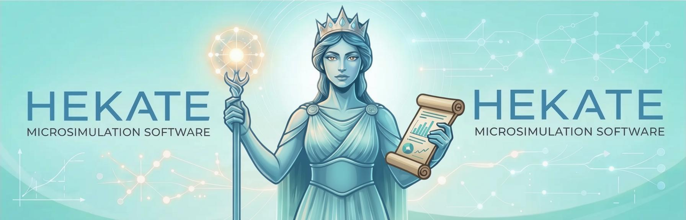

Hekate — Microsimulation Engine
Named after the Greek goddess of crossroads, magic, and transitions, Hekate is a self-contained, dynamically configurable demographic microsimulation system written in Go. Hekate is a general-purpose microsimulation engine that can simulate population dynamics including migration, aging, mortality, fertility, and other demographic processes. The name reflects the engine's purpose—guiding populations through the crossroads of life events and demographic transitions.
If you've used NetLogo, you already understand Hekate's philosophy:
| Feature | NetLogo | Hekate |
|---|---|---|
| Single download, everything included | ✅ | ✅ |
| Easy to learn, shallow learning curve | ✅ | ✅ |
| Build models without programming experience | ✅ | ✅ |
| Rapid iteration: edit → run → see results | ✅ | ✅ |
| Domain-specific language (not general-purpose) | ✅ | ✅ |
| Built-in functions for common tasks | ✅ | ✅ |
Traditional microsimulation systems have a fundamental problem: to change how the model behaves, you need to change the source code and recompile. This means:
Hekate takes a different approach. Models are defined as data, not code.
| Traditional Approach | Hekate Approach |
|---|---|
| Model is code | Model is data (YAML + Lua) |
| Change = recompile | Change = edit text file |
| Programmers only | Anyone can modify |
| One model per release | Many models in one binary |
| Models are hidden | Models are transparent |
| Hard to share | Easy to share |
1. CSV Files: Your Population Data
Your population is stored as a simple CSV file. Each row is one person, each column is a characteristic (age, sex, area, etc.). Hekate automatically detects your columns — no configuration needed.
2. YAML + Lua: Your Model Instructions
Your model is defined in a YAML file with embedded Lua scripts:
The Lua scripts are the "brain" of your model. They tell Hekate what to do with your population.
3. Hekate Engine: The Interpreter
Hekate is a single, self-contained executable that:
For Non-Programmers:
For Researchers:
For Developers:
No installation. No compilation. Just download and run.
Pick the binary for your platform from the latest release:
| Platform | Download |
|---|---|
| Linux (x86_64) | hekate-linux-amd64 |
| Linux (ARM64) | hekate-linux-arm64 |
| macOS (Apple Silicon — M1/M2/M3/M4) | hekate-darwin-arm64 |
| macOS (Intel) | hekate-darwin-amd64 |
| Windows (x86_64) | hekate-windows-amd64.exe |
Not sure which macOS binary you need? Open Terminal and run
uname -m:
arm64→ usehekate-darwin-arm64x86_64→ usehekate-darwin-amd64
Make the binary executable (Linux/macOS only):
chmod +x hekate-*Create a new folder and save these two files inside it.
population.csv — a small starting population:
person_id,age,sex,area_id,alive
1,25,F,1,true
2,30,M,1,true
3,45,F,1,true
4,68,M,1,true
5,82,F,1,true
6,2,M,1,true
7,15,F,1,true
8,35,M,1,true
9,55,F,1,true
10,70,M,1,true
config.yaml — an aging + income + mortality model. It
uses three of Hekate's built-in statistical functions: linear_predict,
normal_draw, and bernoulli_draw.
simulation:
iterations: 5
population_file: "population.csv"
output_file: "output.csv"
random_seed: 42
verbose: true
id_column: "person_id"
models:
- name: "aging"
type: "lua_model"
priority: 1
enabled: true
description: "Increment everyone's age by 1 year"
parameters:
script: |
function transition(population, params)
for _, person in ipairs(population) do
if person.alive == true or person.alive == "true" then
person.age = (tonumber(person.age) or 0) + 1
end
end
return population
end
- name: "income"
type: "lua_model"
priority: 2
enabled: true
description: "Income = 15000 + 300*age + normal noise (sd 4000)"
parameters:
base_mean: 15000
age_coef: 300
sd: 4000
script: |
function transition(population, params)
for _, person in ipairs(population) do
if person.alive == true or person.alive == "true" then
local age = tonumber(person.age) or 0
local mean = linear_predict(params.base_mean, params.age_coef, age)
person.income = normal_draw(mean, params.sd)
end
end
return population
end
- name: "mortality"
type: "lua_model"
priority: 3
enabled: true
description: "Bernoulli mortality: 1% base + 0.5% per decade of age"
parameters:
base_hazard: 0.01
decade_coef: 0.005
script: |
function transition(population, params)
for _, person in ipairs(population) do
if person.alive == true or person.alive == "true" then
local age = tonumber(person.age) or 40
local p = params.base_hazard + params.decade_coef * (age / 10)
if p > 0.5 then p = 0.5 end
if bernoulli_draw(p) then
person.alive = false
end
end
end
return population
endNote on
id_column: Hekate requires you to specify an ID column that contains unique values for each individual. This determines the order of rows in the output CSV, making results easier to compare across runs. It must match a column in your CSV exactly.
From inside that folder:
# Linux
./hekate-linux-amd64 config.yaml
# macOS (Apple Silicon)
./hekate-darwin-arm64 config.yaml
# macOS (Intel)
./hekate-darwin-amd64 config.yaml
# Windows
hekate-windows-amd64.exe config.yamlYou should see something like this:
═══ Hekate: Microsimulation Engine ═══
Iterations: 5
Population file: population.csv
ID column: person_id
Mode: BULK (load all into memory)
Random seed: 42
Models loaded: 3
Enabled models: 3
- aging (priority: 1)
- income (priority: 2)
- mortality (priority: 3)
════════════════════════════════════════════════════════
Lua Script Pre-Flight Validation
════════════════════════════════════════════════════════
✅ aging (priority: 1)
✅ income (priority: 2)
✅ mortality (priority: 3)
════════════════════════════════════════════════════════
✅ All 3 models validated successfully
════════════════════════════════════════════════════════
════════════════════════════════════════════════════════
Runtime Validation: Column Names vs CSV
════════════════════════════════════════════════════════
CSV columns: person_id, age, sex, area_id, alive
✅ aging (priority: 1)
✅ income (priority: 2)
✅ mortality (priority: 3)
════════════════════════════════════════════════════════
✅ All 3 models reference valid columns
════════════════════════════════════════════════════════
--- Using Bulk Processing (load all into memory) ---
Loaded 10 individuals with 5 columns
═══ Iteration 1/5 ═══
▶ aging
▶ income
▶ mortality
...
═══ Simulation Complete ═══
Results saved to output.csv
Open output.csv in any spreadsheet app or text editor. You'll see the
same 10 people, but 5 years older, with an income
column added, and some will have died:
person_id,age,sex,area_id,alive,income
1,30,F,1,true,24685.2518
2,35,M,1,true,24523.7249
3,50,F,1,true,27813.0868
4,73,M,1,true,33257.0189
5,87,F,1,false,
6,7,M,1,true,17121.9789
7,20,F,1,true,22423.5864
8,40,M,1,true,25513.8577
9,60,F,1,true,29392.0931
10,75,M,1,true,
(Exact values will vary with the seed. Person 5's income is blank because she died
during the run — income is only assigned to people still alive at the
moment the income model ran.)
That's it. You've just run a demographic microsimulation in under 5 minutes.
Run it again — you'll get the exact same output:
./hekate-linux-amd64 config.yaml
cp output.csv run1.csv
./hekate-linux-amd64 config.yaml
cp output.csv run2.csv
diff run1.csv run2.csv # no differences, ever
Try changing random_seed: 42 to random_seed: 999. Different
results — but still reproducible.
If your population is large (> 1 million people) or your CSV is sorted by an area column, you can enable streaming mode in your config:
simulation:
streaming_mode: true
area_column: "area_id" # CSV must be sorted by this columnSee the Streaming Mode section in the full README for details.
Get started with Hekate through our step-by-step tutorials. Each tutorial builds on the previous one, taking you from beginner to advanced user.
| Tutorial | Description | Level |
|---|---|---|
| Tutorial 1: Building an Aging Model | Learn the basics by creating a simple aging model. You'll create a population CSV, write your first configuration, run the simulation, and analyze the output. | ⭐ Beginner |
| Tutorial 2: Understanding YAML and Adding Mortality | Dive deeper into YAML rules. Learn how to add a mortality model with age-specific death probabilities and track population changes. | ⭐⭐ Intermediate |
| Tutorial 3: Adding Fertility | Complete the demographic cycle by adding fertility. Learn how to create new individuals (births), assign their characteristics, track population growth, and understand the full demographic cycle of aging, mortality, and fertility. | ⭐⭐⭐ Advanced |
| Tutorial 4: Regression and Statistical Functions | Learn how to use Hekate's statistical toolkit — linear regression, logistic regression, Poisson regression, and softmax — to build realistic models of income, health, education, and fertility. | ⭐⭐⭐ Advanced |
| Tutorial 5: Large-Scale Simulations with Streaming Mode | Learn how to use Hekate's streaming mode to simulate populations of millions to billions of people with minimal memory. Includes performance tuning, area-based processing, and best practices for large-scale runs. | ⭐⭐⭐⭐ Advanced User |
| Tutorial 6: Using Hekate's Statistical Toolkit | Build regression-based models from published coefficients — linear for income, logistic for mortality, Poisson for fertility, softmax for education. Includes a complete worked example combining all four techniques. | ⭐⭐⭐⭐ Advanced |
| Tutorial 7: The Draw Functions | A runnable tour of all nine draw functions — logistic_draw, categorical_draw, poisson_draw, normal_draw, standard_normal_draw, uniform_draw, exponential_draw, bernoulli_draw, lognormal_draw — each with its own config, plus a worked example combining normal_draw with hekate_lookup. |
⭐⭐⭐⭐ Advanced |
Documentation in this bundle may lag the latest release. The GitHub repository is always the source of truth.